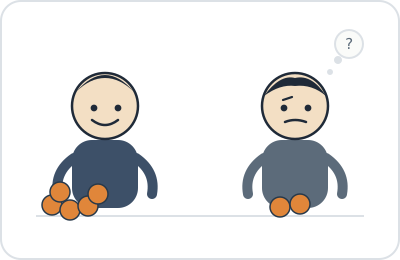
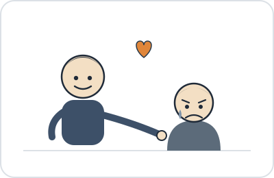
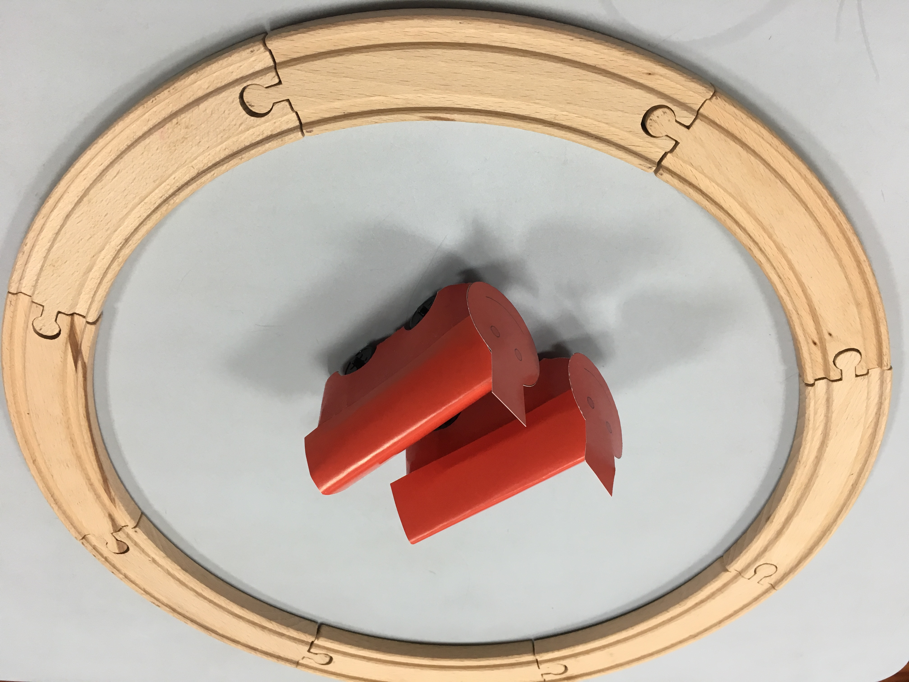
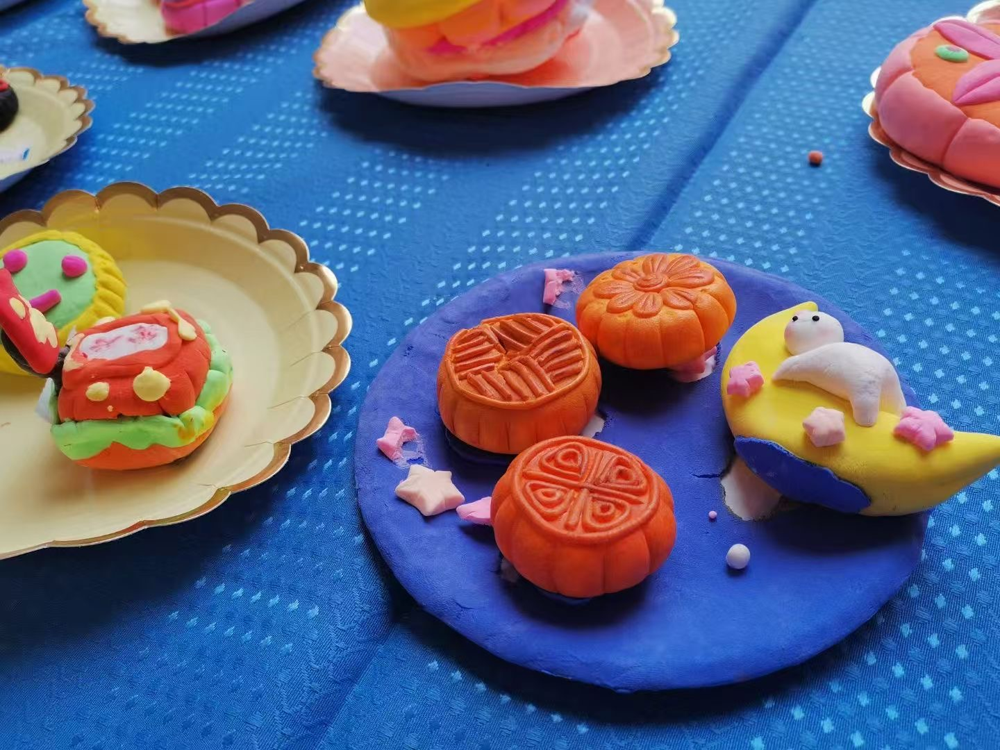

Research
What I study
Social inequality is pervasive, yet a concern for fairness emerges early in childhood. My research asks how children reconcile the two: how they understand and evaluate the disparities they observe, how their own experiences of inequality shape their social and emotional responses, and how they make sense of differences in status and achievement.
Using behavioral experiments, cross-cultural comparisons between the United States and China, and quantitative methods with children ages 4–12, I pursue these questions across three connected lines of work. Ultimately, I aim to understand when children's interpretations of their social world may sustain inequality and when they may instead lead them to question, resist, or rectify it.

Research line 1
Understanding and responding to inequality
How children perceive and respond to disadvantage — both when they observe inequality affecting others and when they experience unequal treatment themselves.
Observing disadvantage: wealth and perceptions of need
Children encounter cues to wealth and social status early in life, and these cues may shape how they understand other people's experiences and needs. I ask whether children use wealth to infer something as basic as how much pain another person feels, and whether those inferences subsequently guide decisions about who deserves help. Across studies with children in China and the US, I examine how wealth cues shape perceptions of suffering and the allocation of scarce resources.
Shu, Y., Li, H., Ma, S., & Bian, L. (2024). Developmental Science, 27, e13467. [DOI] [PDF]
Perceived unfairness and prosocial behavior
Prior work linking inequality to children's sharing has produced mixed results — disadvantage sometimes predicts more generosity, sometimes less, and sometimes no change at all. I ask whether it is the unequal outcome itself that matters, or children's own appraisal of how fair that outcome is. Across two preregistered studies with 400 US children ages 4–9, I examine whether children's later behavior is better predicted by the inequality they objectively experience or by how unfair they perceive that experience to be.
Shu, Y., & Vaish, A. (in press). Developmental Psychology. [DOI] [PDF]In press
Inequality and social trust
Unequal treatment may shape more than children's behavior in a single interaction — it may change what they infer about whether other people can be trusted. Across a series of studies, I examine how experiencing inequality changes children's trust in the person responsible for it, when that mistrust extends to new people, and whether children respond differently when the same unequal outcome is justified rather than arbitrary. Together, these studies ask how a brief experience of inequality can become a broader social judgment about who is trustworthy.
Shu, Y., & Vaish, A. Interpersonal inequality erodes social trust in early childhood.Submitted
Shu, Y., & Vaish, A. The justifiability of inequality shapes children's trust.In prep
Watch: How Inequality Shapes Children's Trust — UVA Three Minute Thesis (3MT) Competition, 2025 Finalist
Where this work is going
I am extending this line of research to examine trust as a pathway through which unfair experiences may shape children's motivation and broader social functioning, including whether restoring fairness can rebuild trust and engagement.
Research line 2
Making sense of status and achievement
How children use social position, group membership, and patterns of achievement to form beliefs about ability, effort, and why people end up differently situated.
Leadership and the social meaning of status
Leadership is a visible form of social status, and children may use it to infer what kind of person a leader is. I examine what qualities children associate with leaders — including intelligence, effort, trustworthiness, and prosociality — and how these assumptions change across development. An ongoing cross-cultural extension in China asks how children's beliefs about leadership reflect broader cultural understandings of authority, merit, privilege, and responsibility.
Shu, Y., +Soong, C., Wu, Y., Zhao, X., & Vaish, A. American and Chinese children's intuitive beliefs about leaders.In prep
Social groups and beliefs about brilliance
Stereotypes linking brilliance to gender often cast men as the default “genius.” I ask whether that pattern holds once race enters the picture, or whether children instead combine gender, race, and cultural context into more specific, intersectional beliefs about who is likely to be highly intelligent. Across studies with children in China and the US, I examine whether stereotypes about intellectual ability are learned as isolated category beliefs or as more intersectional patterns from early in development.
Shu, Y., Hu, Q., Xu, F., & Bian, L. (2022). Developmental Psychology, 58(7), 1345–1359. [DOI] [PDF]
Shu, Y., & Bian, L. Gender stereotypes in children's attribution of others' school performance.In prep
Performance trajectories and beliefs about ability and effort
Two students can arrive at the same level of performance through very different paths. I ask whether children attend only to where someone ends up, or whether they also use how that person got there to infer ability and effort. Across studies with children in China, I compare improving, declining, and stable achievement trajectories, often while holding final performance constant. I am extending this work to examine how social feedback, such as ability- versus effort-focused praise, shapes the inferences children draw from these patterns.
*Hu, Y., *Shu, Y., & Zhao, X. (2026). npj Science of Learning, 11(1), 13. [DOI] [PDF]
Ma, S., Shu, Y., & Vaish, A. Whether the form of teachers' praise changes learners' ability inferences.Ongoing
Where this work is going
I am building on these projects to examine how explanations involving ability, effort, luck, opportunity, and structural constraints shape whether children view inequalities as legitimate or changeable — and how those explanations influence their own motivation and sense of agency.

Research line 3
Foundations of moral and prosocial development
How emotional, cognitive, and social processes give rise to children's concerns about fairness, prosocial behavior, and responses to others' needs and transgressions.
The emotional architecture of prosociality
What emotional capacities allow children to initiate, sustain, and repair cooperative relationships? In a review with Amrisha Vaish, I integrate developmental research on sympathy, positive emotions, guilt, gratitude, and forgiveness to examine how different emotions support distinct stages of prosocial interaction. This framework connects several literatures on moral development and motivates my broader interest in the developmental foundations of children's concern for others.
Vaish, A., & Shu, Y. (2026). Advances in Child Development and Behavior. [DOI] [PDF]
Not so fast: deliberation and the development of fair behavior
Moral psychology has long debated whether fairness judgments arise from fast, automatic intuition or from slower, more deliberate reasoning. I examine whether this distinction looks different in children, who are still developing both their understanding of fairness and their ability to regulate behavior. In ongoing work, we manipulate the time children have to make fairness-relevant decisions to test whether fair behavior emerges intuitively or depends on the opportunity to deliberate.
Shu, Y., Bernard, C., Chajes, J., Grossmann, T., & Vaish, A. Not So Fast: Children's Fair Behavior May Require Deliberation and Development.Under review
Children's and parents' understanding of prosocial motivation
Why someone helps may matter as much as whether they help. In ongoing work, I examine how children and their parents interpret different motivations for prosocial behavior — for example, whether someone acts out of genuine concern, for a reward, or to manage their reputation. This work asks how children learn to distinguish the motives behind outwardly similar prosocial acts and how parents may contribute to the development of those interpretations.
Shu, Y., +Lambidakis, P., Beeler-Duden, S., & Vaish, A. Children and parents' interpretations of others' prosocial behavior.In prep
Ma, S., Shu, Y., & Vaish, A. An efficiency model explaining the development of social preferences.In prep
Forgiveness and social repair
Forgiveness requires children to look beyond a single transgression and decide what another person's behavior says about the relationship going forward. In related work, I examine how children combine information about a person's history of wrongdoing with the quality of their apology when deciding whether to forgive them. This project asks how children integrate past behavior and attempts at repair when navigating social relationships.
Ma, S., Shu, Y., & Vaish, A. Children consider transgression frequencies and apology quality in forgiving others.In prep
Where this work is going
Across these projects, I am increasingly interested in why children differ in their sensitivity to fairness in the first place, including how family socialization and parent–child conversations may contribute to the development and stability of these individual differences.
For the complete list of publications, manuscripts in preparation, and conference presentations, see Publications, the Teaching & Mentorship page, or the full CV.
Notes from the field
The moments in between
Running studies with children is its own kind of reward. Beyond the data, what stays with me are the moments in between — the wildly creative, unfiltered ways kids explain their reasoning, the questions they ask back, the answers that catch a whole research team off guard during debrief. Those moments are a constant reminder of how seriously, and how differently, children think about fairness, trust, and the people around them.
In one task, children were asked which of two characters in a story would grow up to be more successful. One boy skipped both options and pointed to himself instead: “Me.”
Visiting an elementary school to collect data, a child recognized me — he remembered me as the “train game” researcher from a cognitive study I’d run in his preschool classroom two years earlier.

At the end of a long day of testing, on my way out of school I passed a table of children’s Mid-Autumn Festival clay creations — miniature mooncakes and a rabbit resting on the moon, still drying by the door.
